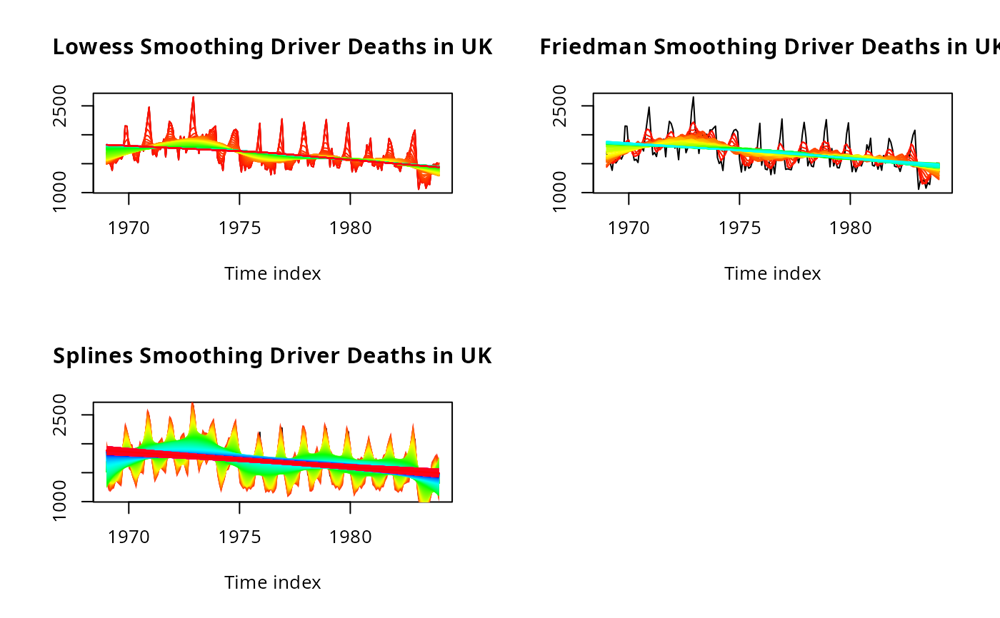

Time series smoothing with multiple bandwidth levels
Source:R/EXPLORE_TIME_SERIES.R
ts_smoothing.RdPlots a time series and overlays a family of smoothed curves
using a chosen smoothing method. For bandwidth-based methods
("kernel", "lowess", "splines", "default"),
a sequence of bandwidth or span values from start to stop
is swept and each curve is drawn in a different rainbow colour, making
it easy to visually select an appropriate smoothing level.
"polynomial" and "linear" ignore the bandwidth sequence
and fit regression-based trend lines instead. The function uses base R
graphics and produces a plot as a side effect.
Arguments
- df
A
tsobject containing the time series to smooth.- start
Numeric. Starting value of the bandwidth or span sequence. Default is
0.01.- stop
Numeric. Ending value of the bandwidth or span sequence. Default is
2.- step
Numeric. Increment between bandwidth values. Smaller values produce more curves. Default is
0.001.- title
Character string appended to the plot title. Default is
"".- type
Character string specifying the smoothing method. One of:
"kernel"Gaussian kernel smoother via
ksmooth()— bandwidth controls the smoothing window (default)."lowess"Locally weighted regression via
lowess()—fcontrols the span proportion."friedman"Friedman's super-smoother via
supsmu()— span must be in (0, 1)."splines"Smoothing splines via
smooth.spline()—sparcontrols the penalty."default"Running mean filter via
filter()— bandwidth rounded to an integer window width."polynomial"Fits a centred cubic polynomial trend with and without seasonal (cos/sin) terms via
lm()."linear"Fits a simple linear trend via
lm()and draws the regression line.
Value
Invisibly returns NULL. The function is called for its side
effect of producing a base R plot.
Examples
ts_data<-ts(UKDriverDeaths,start=1969,end=1984,frequency=12)
par(mfrow=c(2,2))
ts_smoothing(ts_data,start=.01,stop=2,step=.01,
title="Driver Deaths in UK",type="default")
ts_smoothing(ts_data,start=.01,stop=2,step=.01,
title="Driver Deaths in UK",type="polynomial")
ts_smoothing(ts_data,start=.01,stop=2,step=.01,
title="Driver Deaths in UK",type="linear")
ts_smoothing(ts_data,start=.01,stop=2,step=.01,
title="Driver Deaths in UK",type="kernel")
 ts_smoothing(ts_data,start=.01,stop=2,step=.01,
title="Driver Deaths in UK",type="lowess")
ts_smoothing(ts_data,start=.01,stop=2,step=.01,
title="Driver Deaths in UK",type="friedman")
ts_smoothing(ts_data,start=.01,stop=2,step=.01,
title="Driver Deaths in UK",type="splines")
ts_smoothing(ts_data,start=.01,stop=2,step=.01,
title="Driver Deaths in UK",type="lowess")
ts_smoothing(ts_data,start=.01,stop=2,step=.01,
title="Driver Deaths in UK",type="friedman")
ts_smoothing(ts_data,start=.01,stop=2,step=.01,
title="Driver Deaths in UK",type="splines")
